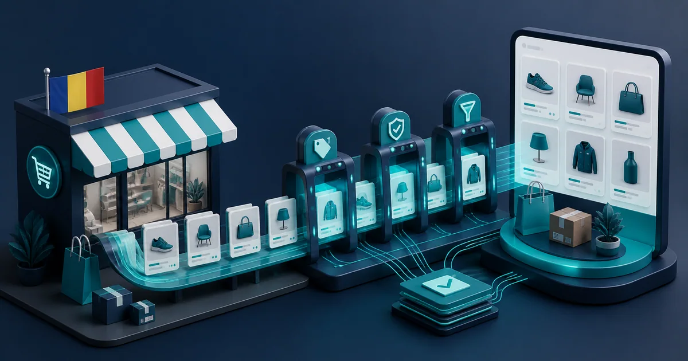

Site custom vs WordPress în 2026: avantaje și riscuri
WordPress accelerează proiectele standard și oferă ecosistem, iar dezvoltarea custom oferă control asupra fluxurilor și codului când cerințele justifică investiția.
Citește articolulGhiduri clare despre SEO, promovare online, website-uri și măsurarea rezultatelor. Fără jargon inutil, cu exemple și pași aplicabili.
Scrie întrebarea, serviciul sau obiectivul. Sugestiile apar imediat, iar biblioteca de articole se filtrează numai după ce apeși săgeata sau Enter.
WordPress accelerează proiectele standard și oferă ecosistem, iar dezvoltarea custom oferă control asupra fluxurilor și codului când cerințele justifică investiția.
Citește articolulPentru „ce este Google Merchant Center”, verifică mai întâi datele produsului din sursă și pagina finală văzută de client. În analiza „ce este Google Merchant Center”, aplică o singură schimbare — corectează o singură familie de erori și retestează…
Citește articolulPentru „cum creezi cont Google Merchant Center”, verifică mai întâi datele produsului din sursă și pagina finală văzută de client. În analiza „cum creezi cont Google Merchant Center”, aplică o singură schimbare — corectează o singură familie de erori…
Citește articolulPentru „Google Merchant Center este gratuit”, verifică mai întâi datele produsului din sursă și pagina finală văzută de client. În analiza „Google Merchant Center este gratuit”, aplică o singură schimbare — corectează o singură familie de erori și…
Citește articolulPentru „Merchant Center fără magazin online”, verifică mai întâi datele produsului din sursă și pagina finală văzută de client. În analiza „Merchant Center fără magazin online”, aplică o singură schimbare — corectează o singură familie de erori și…
Citește articolul
Pentru „Merchant Center pentru WooCommerce România”, verifică mai întâi datele produsului din sursă și pagina finală văzută de client. În analiza „Merchant Center pentru WooCommerce România”, aplică o singură schimbare — corectează o singură familie…
Citește articolulPentru „checklist configurare Merchant Center”, verifică mai întâi datele produsului din sursă și pagina finală văzută de client. În analiza „checklist configurare Merchant Center”, aplică o singură schimbare — corectează o singură familie de erori…
Citește articolulPentru „feed XML Merchant Center”, verifică mai întâi datele produsului din sursă și pagina finală văzută de client. În analiza „feed XML Merchant Center”, aplică o singură schimbare — corectează o singură familie de erori și retestează produsele…
Citește articolulPentru „Google Sheets feed Merchant Center”, verifică mai întâi cererea demonstrabilă și marja și viteza de rotație a stocului. În analiza „Google Sheets feed Merchant Center”, aplică o singură schimbare — testează o selecție restrânsă înainte să…
Citește articolulPentru „sincronizare stoc Merchant Center”, verifică mai întâi cererea demonstrabilă și marja și viteza de rotație a stocului. În analiza „sincronizare stoc Merchant Center”, aplică o singură schimbare — testează o selecție restrânsă înainte să…
Citește articolulDiscutăm obiectivul, alegem pașii potriviți și stabilim ce merită măsurat.
Hai să construim planul →